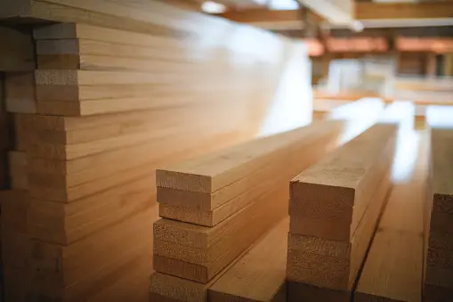

NOS PRODUITS
Plongez dans une révolution de confort avec notre gamme exquise d'appareils de froid et de climatisation, où l'importance de la régulation thermique atteint de nouveaux sommets. Chaque appareil que nous proposons incarne bien plus qu'une simple technologie ; il représente une passerelle vers un mode de vie amélioré, où la température n'est plus une contrainte, mais un outil que vous maîtrisez avec aisance.
Faire le bon choix en matière d'appareils d'humidité industrielle est essentiel pour le succès de votre entreprise. Voici quelques exemples concrets pour vous aider à comprendre comment nos produits peuvent répondre à vos besoins spécifiques : • Secteur Agroalimentaire :Si vous opérez dans l'industrie alimentaire, nos capteurs d'humidité de précision sont indispensables pour garantir la qualité de vos produits. Ils vous permettent de surveiller et de contrôler l'humidité dans les environnements de stockage et de production, vous aidant ainsi à éviter la détérioration des aliments, à prolonger leur durée de conservation et à répondre aux normes de sécurité alimentaire. • Pharmaceutique :
Dans le secteur pharmaceutique, la fiabilité est cruciale. Nos appareils d'humidité garantissent que vos produits pharmaceutiques restent stables et efficaces en surveillant les conditions de stockage et de transport. Vous pouvez avoir confiance en notre technologie pour respecter les réglementations strictes et maintenir la qualité de vos produits. • Construction :
Pour les entreprises de construction, notre gamme d'appareils d'humidité vous aide à prévenir la corrosion des matériaux de construction, à garantir la qualité des structures et à économiser sur les coûts de maintenance à long terme. Choisissez nos solutions pour assurer la durabilité de vos projets. • Industrie Chimique :
Dans des environnements chimiques sensibles, la précision de la surveillance de l'humidité est primordiale pour éviter des réactions indésirables. Nos capteurs d'humidité industriels offrent une fiabilité inégalée pour maintenir des conditions optimales et assurer la sécurité de vos opérations. • Énergie :
Dans le secteur de l'énergie, la maintenance préventive est essentielle pour éviter les pannes coûteuses. Nos appareils d'humidité vous aident à surveiller l'humidité dans les générateurs, les turbines et d'autres équipements, prolongeant ainsi leur durée de vie et améliorant leur efficacité. Quel que soit votre domaine d'activité, nous sommes là pour vous fournir les appareils d'humidité industrielle de pointe dont vous avez besoin pour garantir la qualité, la sécurité et la fiabilité de vos opérations. Explorez notre gamme complète de produits et faites le choix qui propulsera votre entreprise vers le succès.
Déshumidificateur Commercial Portable
Caractéristiques des produits
1. Déshumidificateur pour chantier de construdtion et séchage après un dégât d'eau2. Possibilité d'extraire haut de 60/90/120/138L par 24Hmax (Selon le modèle) intérupteur de minuterie
3. 1-24 heures
4. Facile à transporter avec poignée réglage et grandes roues
5. Grand écran LED, facile à utiliser
6. Dégivrage automatique pour rotéger la machine
7. Structure intelligente, entretien facile
8. Température, humidité, dégivrage, affiché, fonction d'alarme complète de l'eau
9. Automatique ON/OFF suivre l'humidité Mémoire de réglage des données.
10.0EM Approbation ODM.
Domaine d'application :
 |
|||
|---|---|---|---|
| Stockage des aliments | Garage | Piscine | Site de construction |
Déshumidificateur Commercial Portable
l'importance de nos produits ne s'arrête pas aux mois chauds. En hiver, nos systèmes de refroidissement entrent en jeu, équilibrant les températures pour créer un environnement chaleureux et accueillant. Votre espace devient alors une toile vierge, prête à accueillir vos moments les plus créatifs et significatifs. Nos appareils ne se contentent pas de modifier la température ; ils transforment la façon dont vous vivez et interagissez avec votre environnement.
Déshumidificateur de réfrigerant industriel

Caractéristiques des produits
1. Zone largement utilisée, couverture commercial et place industrielle
2. 1-24 heures interrupteur minuterie
3. Élargi et fixé au bas pour un placement stable et sûr
4. Grand écran LED, facile à utiliser
5. Dégivrage automatique pour protéger la machine
6. Structure intelligente, entretient facile
7. Température, humidité, dégivrage affiché
8. Automatiquement ON / OFF suivre l'humidité.
9. Mémoire de réglage des données.
Domaine d'application
| Garage | Piscine | Hôpital |
|  |  |
|
| Séchage du bois | Pharmaceutique | Culture du cannabis |
Déshumidificateur de réfrigérant industriel
Plafond canalisé
Caractéristiques des produits
1. Coût d'installation et de maintenance inférieur, conception économe en énergie2. Contrôle WIFI avec le système Tuya.
3. Optional
4. Étapes de filtration de l'air (primaire, sécondaire, HEPA, ionisuer, lampe stérilisante UV).
5. Fonctionnement de longue heure 24x7.
6. Automatiquement ON / OFF suivre l'humidité. M
7. Plusieurs modes de fonctionnement (circulation intérieur / circulation d'air frais / Déshumidificateur continue)
8. Vitesse du vent réglable à trois vitesses
9. Pompe à eau intérieur en option
Déshumidificateurs canalisés au plafond
| Modéle | RYCF-7S | RYCF-10S | RYCF-12S | RYCF-22S | RYCF-30S | RYCF-40S |
|---|---|---|---|---|---|---|
| Tension | 380V/50Hz | 380V/50Hz | 380V/50Hz | 380V/50Hz | 380V/50Hz | 380V/50Hz |
| Capacité ( 30℃ 80% HR ) | 7kg/h | 10kg/h | 12kg/h | 20kg/h | 30kg/h | 40kg/h |
| Puissance.Max | 2800W | 4250W | 4650W | 8400W | 1200W | 15000W |
| Courant | 5.5A | 6.5A | 7.5A | 13A | 18A | 23A |
| Flux d'air | 1800m³/h | 2500m³/h | 3000m³/h | 5600m³/h | 7400m³/h | 10000m³/h |
| Pression atmosphérique | 100Pa | 100Pa | 120Pa | 150Pa | 200Pa | 200Pa |
| Filtre | YES | YES | YES | YES | YES | YES |
| Température de travail | 5-38℃ | 5-38℃ | 5-38℃ | 5-38℃ | 5-38℃ | 5-38℃ |
| Entréé d'air de procédé | 540*430mm | 540*430mm | 604*554mm | 1004*524mm | 1234*654mm | 1234*654mm |
| Sortie d'air sec | 540*430mm | 540*430mm | 604*554mm | 1004*524mm | 1234*654mm | 1234*654mm |
| Taille du corps (mm) | 1050*700*700 | 1050*700*700 | 1100*900*700 | 1100*1280*700 | 1510*1500*800 | 1510*1500*800 |
| Poids | 100kg | 110kg | 126kg | 210kg | 330kg | 375kg |
| Images |  |
|||||
Déshumidificateurs de roue déshydratants
Caractéristiques des produits
1. 3 fois la durée de vie des déshumidificateurs réfrigérés2. Fonctionne bien dans un environnement à faible point de rosé (température ambiante de travail -1 ON 55 OC)
3. Silice gel adsorption lavable à la roue, recyclé, protection de l'environnement
4. Reduire l'humidité en dessous de 10% (selon le modèlé)
5. Contrôle précis de la plage d'humidité ambiante
6. Mode automatique / manuel, automatiquement allumé / désactivé en fonction de l'humidité ambiante
7. 1 à 24 heures principe du rotor dessiccant Principe du rotor dessiccant
Domaine d'application

Déshumidificateurs de roue déshydratants
| Modèle | RYDZ-26DM | RYDZ-58DM | RYDZ-90DM | RYDZ-128DM |
|---|---|---|---|---|
| Tension | 220V/50Hz | 220V/50Hz | 220V/50Hz | 220V/50Hz |
| Capacité ( 30℃ 80%RH ) | 26L/D | 58L/D | 90L/D | 138L/D |
| Puissance.Max | 200W | 800W | 1200W | 1300W |
| Courant | 2.5A | 3.2A | 3.8A | 4.0A |
| Flux d'air | 260m³/h | 550m³/h | 1000m³/h | 1300m³/h |
| Pression atmosphérique | 40-60Pa | 40-60Pa | 40-80Pa | 40-80Pa |
| Filre | YES | YES | YES | YES |
| Température de travail | 5-38℃ | 5-38℃ | 5-38℃ | 5-38℃ |
| Entrée d'air de procédé | ∅150mm | ∅160mm | 340*300mm | 340*300mm |
| Sortie d'air sec | ∅100mm | ∅160mm | 255*190mm | 255*190mm |
| Taille du corps (mm) | 685*310*211 | 830*490*370 | 900*640*470 | 900*640*470 |
| Poids | 16kg | 35kg | 49kg | 53kg |
| Images |
Déshumificateurs de roue déshydratants
| Modèle | RYDZ-26DM | RYDZ-58DM | RYDZ-90DM | RYDZ-128DM |
|---|---|---|---|---|
| Tension | 220V/50Hz | 220V/50Hz | 220V/50Hz | 220V/50Hz |
| Capacité ( 30℃ 80% HR ) | 26L/D | 58L/D | 90L/D | 138L/D |
| Puissance.Max | 200W | 800W | 1200W | 1300W |
| Courant | 2.5A | 3.2A | 3.8A | 4.0A |
| Flux d'air | 260m³/h | 550m³/h | 1000m³/h | 1300m³/h |
| Pression atmosphérique | 40-60Pa | 40-60Pa | 40-80Pa | 40-80Pa |
| Filtre | YES | YES | YES | YES |
| Température de travail | 5-38℃ | 5-38℃ | 5-38℃ | 5-38℃ |
| Entrée d'air de procédé | ∅150mm | ∅160mm | 340*300mm | 340*300mm |
| Sortie d'air sec | ∅100mm | ∅160mm | 255*190mm | 255*190mm |
| Taille du corps (mm) | 685*310*211 | 830*490*370 | 900*640*470 | 900*640*470 |
| Poids | 16kg | 35kg | 49kg | 53kg |
| Images |
Humidificateur à ultrasons indusdtriel
Caractéristique des produits
1. 3/6/9/12/ ...Capacité d'humidité de 48L / H, large couverture d'humidification2. Le réglage d'humidité varie de 10% à 90%
3. Grand panneauxde commande LED, facile à utiliser
4. 1-24 heures de synchronisation marche / arrêt
5. Le diamètre des particules de brouillard est inférieur à 5h, ce qui réduit le gaspillage d'eau, une humidification plus rapide.
Compétitif dans les détails
1. La roue universelle peut être fixée en bas, facile à déplacer et à fixer2. Atomiseur de brouillard en acier inoxydable 304, feuille d'atomisation en céramique, particules de brouillard ultra-fines
3. Ventilateur étanche en acier inoxydable, filtre d'entré d'air, antirouille et anticorrosion
4. Structure étanche, traitement de colle imperméable, éviter les fuites d'eau
5. Construit dans la structure du tuyau, le brouillard ne pas fuir
6. Fitre à eau en coton en option
Domaine d'application

Humidificateur ultrasonic Commercial / Industriel

Quelques Moteurs & Machines de l'humidité

|
Nom du produit |
Nom du produit |
Nom du produit |
 |
||
|
Nom du produit |
Nom du produit |
Nom du produit |
Pour toutes informations sur le prix des produits et services, priez de contacter l'entreprise via les réseaux ou autres méthodes dans la section contact.
Veillez cliquer sur CONTACT-NOUS pour y accéder. Derrière chaque appareil se cache une ingénierie de pointe, une fusion d'esthétique et de fonctionnalité. Nous comprenons l'importance de vous offrir une technologie intuitive, capable de s'adapter à votre mode de vie dynamique tout en étant d'une efficacité énergétique optimale. Avec notre gamme, vous ne choisissez pas seulement un produit, mais une expérience qui élève votre qualité de vie à des hauteurs inexplorées. En somme, nos appareils de froid et de climatisation ne sont pas simplement des équipements ; ce sont des partenaires pour votre bien-être au quotidien. Explorez notre sélection et découvrez comment vous pouvez réécrire les règles du confort thermique dans votre espace. Soyez prêt à redéfinir l'importance de la température ambiante, à créer des environnements propices à l'épanouissement et à vivre la vie à la température de vos désirs.